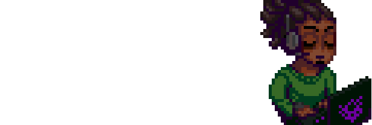

Enigma do Medo
Esse é um futuro jogo eletrônico de survivor horror que sera lançado por Cellbit. A data de lançamento esta prevista para, no máximo, final do segundo semestre, como avisado na live de 16/06/2023 com uma pequena gameplay ao vivo.
O jogo é baseado na série de RPG de mesa Ordem Paranormal, tambem realizadas por Cellbit. Para começar seu desenvolvimento, uma campanha teria começado em outubro de 2020, com o objetivo de arrecadar meio milhão de reias, cois que atingida em menos de 5 horas, e que no total, foram arrecadados incriveis 4 milhões de reais, quase 8 vezes mais do que o esperado.
Em sua aventura de exploração o jogador controla a personagem Mia, uma investigadora paranormal em que sua missão onsiste em salvar seu pai, o Senhor Veríssimo. Em sua trajetória ela é acompanhada por seu cachorro, Lupi em toda a investigação e trajeória no jogo.



Plot geral
O jogo acompanha Mia, uma investigadora da Ordo Realitas na busca de seu pai e líder da Ordem, Senhor Veríssimo, que desapareceu misteriosamente, junto com Lupi, um cachorro medroso que a ajuda enquanto tenta superar seu medo de criaturas paranormais, enquanto exploram ambientes em pixel art e 3D desenhados a mão. Outros personagens marcantes do RPG estarão presentes.
Culto do Medo
O Culto do Medo é um tipo de seita com fortes ligações ao Elemento de Medo. Esse grupo também é responsável pelo desaparecimento de vários agentes da Ordo Realitas e principal antagonista do jogo.[5] Esses Ocultistas parecem ter planos muito maiores do que qualquer outro grupo já visto.
Família Strach
A Família Strach praticamente vivia em uma bolha, com suas próprias leis em uma espécie bizarra de culto ao medo. Eles se tornaram mais obcecados e alucinados depois de um evento que eles chamam de "Surgimento do Desassombrado"
Missões
Atualmente, não se sabe o número exato de missões, mas 2 delas serão DLC's baseadas nas campanhas de RPG de O Segredo Na Floresta e Desconjuração.
Bosses
Atualmente o Enigma do Medo possui ao menos 6 bosses confirmados, sendo um deles o Zumbi de Sangue de Quatro Braços, e outras 5 criações da comunidade por pessoas que resgataram a recompensa Deus do Medo